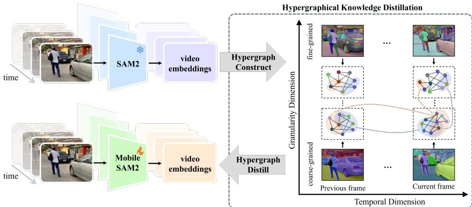

Figureure 1 · : Video Segmentation Comparison<sup>5</sup>Fig. 1: Video Segmentation Comparison<sup>5</sup>. With the proposed HyperKD and the searched model architectures, our MobileSAM2 works efectively with limited parameters.这张图概括 MobileSAM2 的整体方法流程。阅读时先看模块之间传递的训练信号，再看作者如何把目标拆成可优化的子问题。

Figureure 2 · : Overview of HyperKDFig. 2: Overview of HyperKD. HyperKD constructs hypergraphs to explicitly model and extract the generalizable temporal knowledge and the comprehensive multigranularity knowledge from SAM2, which are then distilled into lightweight MobileSAM2 by aligning it with the constructed hypergraphs. Specifically, Temporal HyperKD considers objects within a single frame as nodes and constructs hypergraphs by linking multiple related nodes across frames via hyperedges, as shown along the temporal dimension. Granularity HyperKD treats segmentation entities within a single granu larity level as nodes and builds hypergraphs by linking multiple relevant nodes across granularity levels $( \mathrm { e . g . }$ , objects, parts and subparts) via hyperedges, as shown along the granularity dimension. In this way, the trained MobileSAM2 captures rich and diverse hypergraphical correlations across multiple frames and granularity levels, ultimately achieving robust and comprehensive video understanding and segmentation.这张图概括 MobileSAM2 的整体方法流程。阅读时先看模块之间传递的训练信号，再看作者如何把目标拆成可优化的子问题。